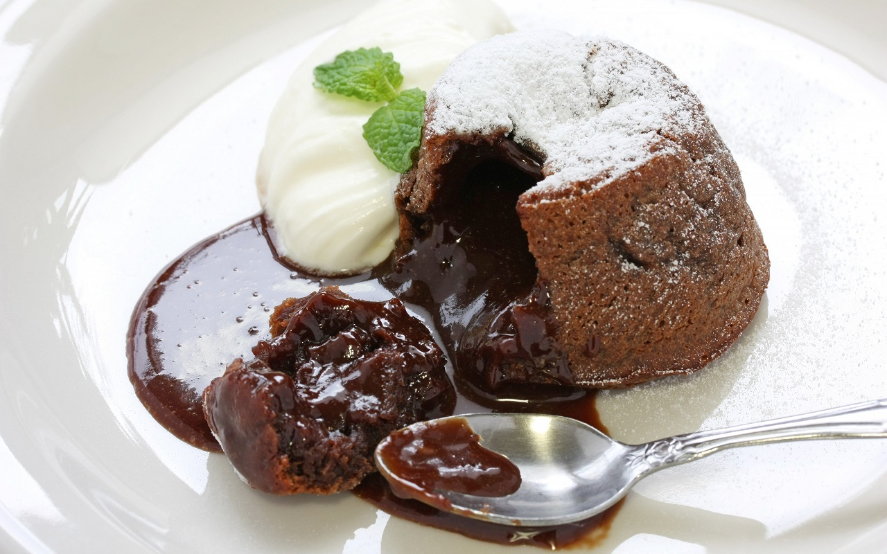

Desserts recipes
Shoko-fondan

| Products |
weight |
| Black chocolate (70%) |
150 g |
| Wheat flour |
40 g |
| Eggs |
2 pcs. |
| Butter |
50 g |
| Sugar |
40 g |
| Salt |
a pinch |
| Ice cream |
for serving |
| Baking powder |
½ tsp. |
- Turn on the oven to 180 degrees (heating mode top-bottom).
- In a water bath, melt the chocolate along with the butter.
Water bath for chocolate fonan with liquid center
- Whisk the eggs with the sugar and salt until a lush froth. Pour in the chocolate and butter mixture and whisk again.
- Add flour sifted with baking powder. Stir with a spoon. Pour into the molds. Pour a little away from the edges, they will not rise much. A little secret for the liquid chocolate fondue recipe: if the molds are silicone, I recommend sprinkling them with cocoa, if others, then grease with butter and sprinkle cocoa on top.
- Quickly open the well heated oven and place the cupcakes in the oven for 7-9 minutes. It always takes me exactly 8 minutes, but everyone's oven is different. Once the cupcakes have risen, you can take them out. Allow the cupcakes to cool slightly and gently remove from the molds, they are very tender. Serve the chocolate fondant with ice cream (preferably a white ice cream scoop).